PG Lion's Pride
Zan Bluescale
Dono
Dragon slayer del ghiaccio
Rango
Note
Cresciuto nei freddi picchi a Nord di Fiore da Barost, il drago dei ghiacci, in compagnia del suo migliore amico Frost, ha deciso di mettersi in viaggio ed unirsi ai Lions pride con lo scopo di scoprire cosa fosse successo a suo padre dopo la sua scomparsa
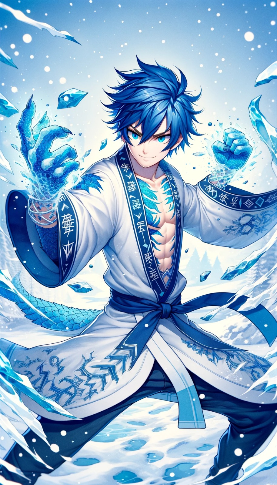
Frost
Dono
Magia medica, Magia dei sogni
Rango
Note
Benchè questo Exeedo sia estremamente freddoloso non ha mai abbandonato il fianco del suo compagno e miglior amico Zan. Cresciuti assieme nei picchi del Nord, mentre Zan si addestrava con Barost nella magia del ghiaccio, Frost si è specializzato nella magia curativa, per assicurarsi che il suo incosciente amico potesse sopravvivere alla sua stessa avventatezza.
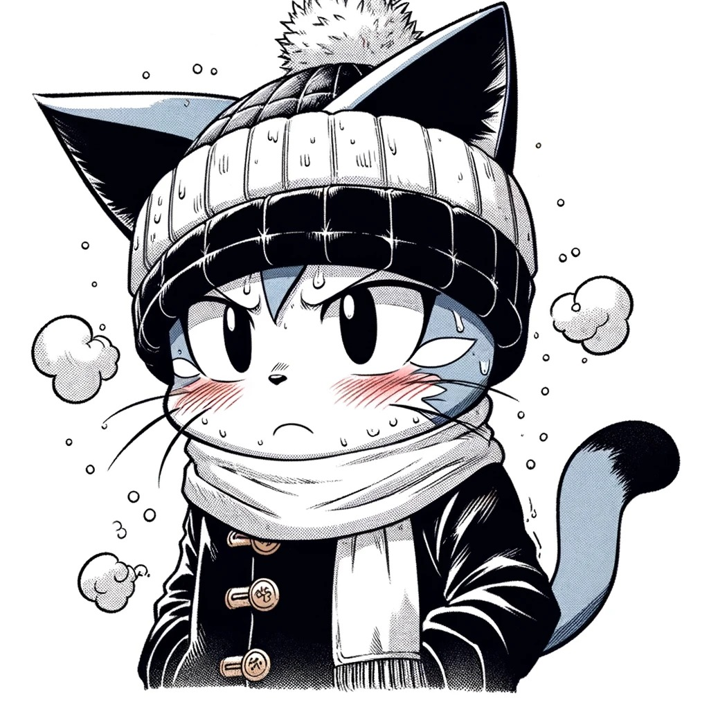
Tog
Dono
Dragon slayer dell’acido
Rango
Note
Questo giovane Kovolt, abbandonato dalla sua famiglia nella palude, venne adottato ed addestrato da Venomfang, il drago che la abitava.
Cresciuto lontano dalle tradizioni degli altri Kovolt, nel selvaggio della palude, assieme solo a Venomfang e Noy, il suo migliore amico, rafforzò per anni il suo corpo ed il suo potere, sviluppando anche molte eccentricità come lo scarsissimo attaccamento ai beni materiali, che preferiva invece sciogliere.
Quando Venomfang scomparse, si trovò però costretto a mettersi in viaggio per scoprire che fine avesse fatto.
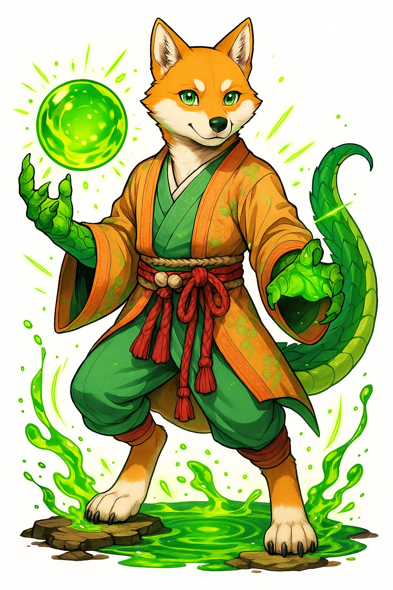
Noy
Dono
Magia del fuoco
Rango
Note
Nato nelle paludi e cresciuto assieme a Tog e Venomfang, ha presto sviluppato un forte attaccamento verso il proprio Dragon slayer, che vede come un fratello maggiore.
Noy ha un carattere più pragmatico di Tog che invece tende ad essere impulsivo, non parla molto ma osserva tutto con grande attenzione ed interesse, spingendo Tog a prendere scelte più ragionate (qualche volta).
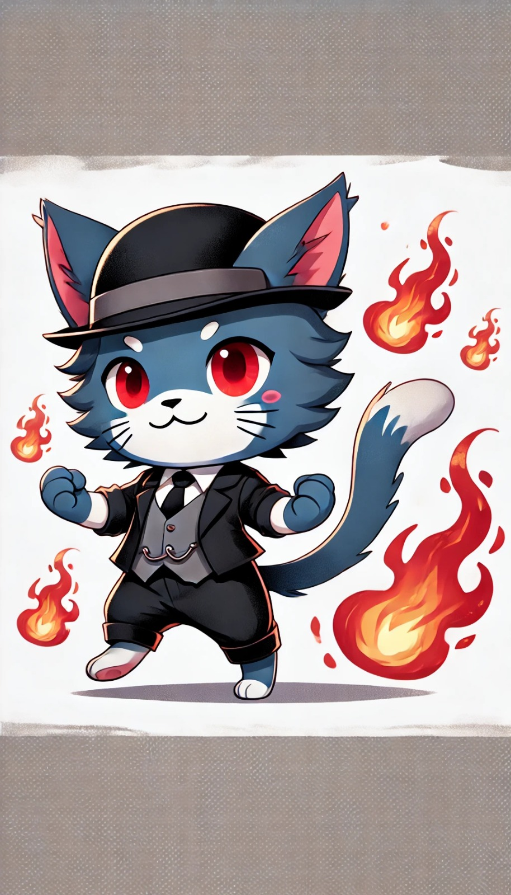
Ravi
Dono
Magia del sole
Rango
Note
Ravi venne abbandonato quando era ancora piccolo nel tempio di Helyos a Rosarium, grazie al suo Dono venne accudito dai sacerdoti con grande affetto e rispetto, i quali insegnarono a lui i dogmi di Helyos.
Divenuto adulto decise di abbandonare la sicurezza del Tempio per darsi all’avventura e portare la luce di Helyos per il mondo (e farsi odiare da tutte le donne).
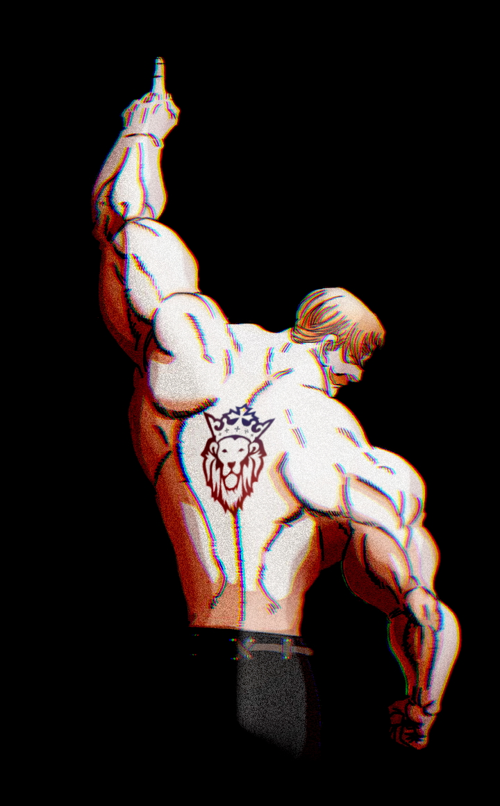
Ofelia Penelope Raventhorn
Dono
Magia delle Rune
Rango
Note
Ofelia ricorda poco del suo passato, per la maggior parte della sua vita ha vissuto con suo padre Leon ad Oleus, la capitale di Fiore.
Nonostante il padre non le abbia mai voluto rivelare molto sul suo passato o sugli strani tatuaggi che la ricoprono, le ha insegnato tutto ciò che poteva sulla magia delle rune, rendendola una maga estremamente capace.
Nonostante la sua timidezza, decise di lasciare Oleus per iniziare la sua avventura per scoprire il suo passato ed i misteri che la circondano.
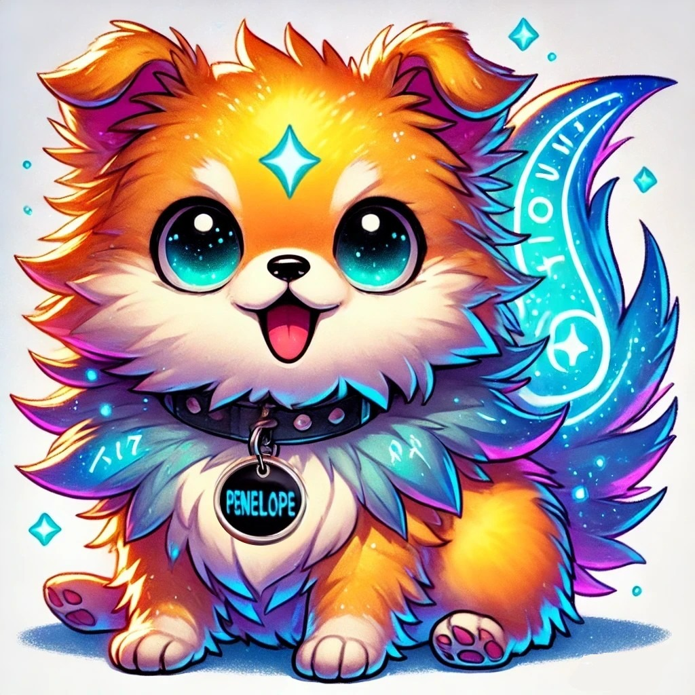
Perseus Will (merda)
Dono
Magia dell’immaginazione
Rango
Note
I Genitori di Perseus erano dei razziatori di rovine che quando era ancora molto piccolo, decisero di inoltrarsi nella Foresta eterna, alla ricerca di ricchezze.
Qui però trovarono la loro fine a causa di un branco di Belve distorcenti che però risparmiarono il giovane, il quale si trovò costretto a sopravvivere da solo all’interno di quel luogo così ostile.
Grazie alla sua magia attirò l’interesse di Sunny, un Therian che esplorava la foresta, il quale lo aiutò a sopravvivere e lo addestrò.
Oltre al Therian l’unico amico con cui Perseus poteva parlare era Chibit, il suo famiglio e migliore amico, tutto ciò che gli restava della sua famiglia, non avendo nessun altro con cui rapportarsi se non Sunny e Chibit, divenne una persona schietta ed eccentrica, molto lontana da ciò che il mondo civilizzato considerasse “normale”.
Quando fu abbastanza grande, sotto consiglio di Sunny, Perseus lasciò la foresta per scoprire il mondo esterno.
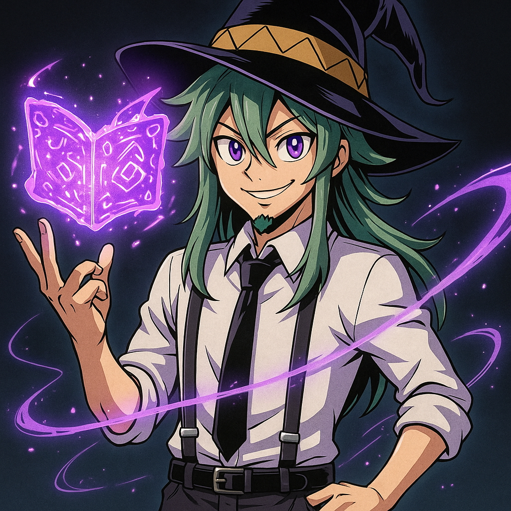
Chibit
Dono
Magia Fortuna/Sfortuna
Rango
Note
Prima che Perseus nascesse, Chibit era l’animaletto da compagnia delle sue sorelle, quando poi queste si allontanarono dalla famiglia dopo la sua nascita, Chibit rimase con lui e divennero amici inseparabili.
Quando Perseus divenne un mago, Chibit fu ben felice di divenire il suo famiglio ed il loro legame già molto profondo divenne indissolubile.
Vivendo nel cappello di Perseus, ebbe modo di assistere in prima persona tutte le avventure vissute dal suo migliore amico, quando però questi venne brutalmente ucciso davanti ai suoi occhi il dolore fu tale da spingerlo a superare i suoi limiti di animale, di semplice famiglio, risvegliandosi ed acquisendo coscienza con un solo scopo, farlo tornare in vita.
Rip piccolo angelo, Perseus non ti meritava.

Loyce Chronos
Dono
Magia del controllo
Rango
Note
Nato da un rapporto extraconiugale in una delle famiglie più prestigiose di Fiore, Loyce visse buona parte della sua infanzia, finchè il padre, Dante Chronos, non decise di sfruttarlo per sviluppare una tecnologia in grado di modificare il proprio dono.
Allontanato dalla propria madre e costretto all’interno di una famiglia priva di affetto nei suoi confronti, trovò conforto solo nella gentilezza della sorellastra Aciel, l’unica a mostrare un effettivo affetto nei suoi confronti.
Grazie a lei Loyce scoprì che la madre era stata fatta imprigionare da Dante.
Con il suo sangue fuso al Lyrium a causa degli esperimenti condotti sul suo corpo dal padre, Loyce ottenne la magia del controllo, grazie alla quale assieme all’aiuto di Aciel riuscì a fuggire dalla famiglia Chronos, divenendo un membro dei Lions pride, grazie anche al Master Helga la quale lo prese come suo nipote adottivo.
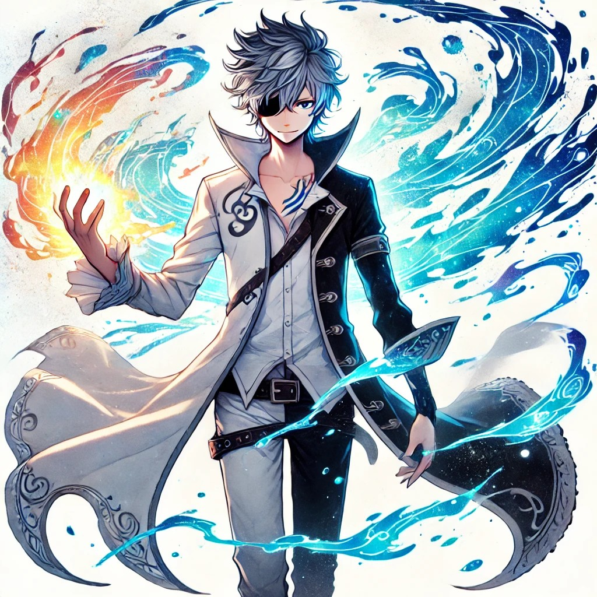
Galan Inker
Dono
Magia del colore
Rango
Note
Inker ha un’indole solitaria, si isola spesso per trovare il soggetto perfetto da ritrarre, con la luce perfetta e la posa perfetta. E’ un artista molto capriccioso, che spesso confonde la bontà con la bellezza estetica, tutto però con grande innocenza.
Si è unito ai Lion’s Pride perché sempre alla ricerca di ispirazione per nuovi soggetti per la sua “tela perfetta”, e non c’è niente di meglio di un po’ di avventura per trovare mostri da ritrarre o scene epiche da riproporre.
Cerca la fama con la sua arte, ma non è interessato al denaro: vuole venire riconosciuto un giorno come “Artista supremo”.
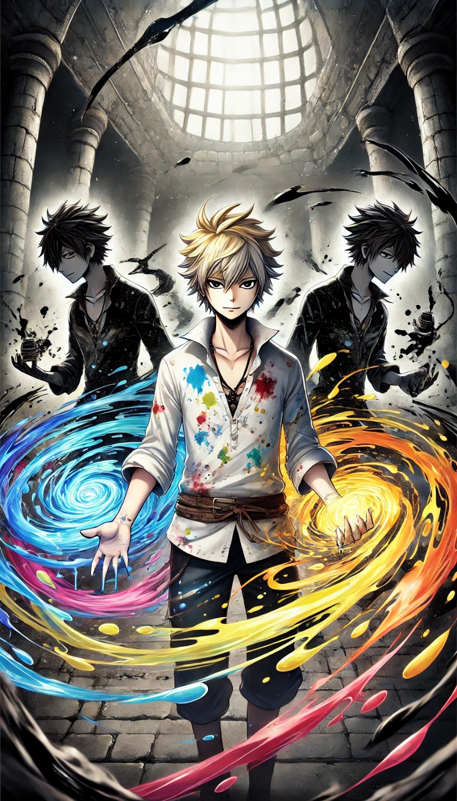
Atharion
Dono
Magia delle carte
Rango
Note
Un vecchio membro dei Lions pride, un giorno grazie al suo dono ottenne la premonizione che un grave pericolo incombeva sul mondo e sui draghi.
I suoi avvertimenti però non vennero presi sul serio e venne lasciato a tentare di fronteggiare questa ipotetica minaccia.
Nei suoi viaggi alla ricerca di qualcosa che potesse impedire la dipartita dei draghi, fece l’incontro di uno strano personaggio, chiamato Eazu, il quale gli promise di raccontargli nel dettaglio gli eventi futuri riguardanti la sua premonizione, se lui in cambio avesse superato la sua prova.
Ingenuamente Atharion accettò la sfida venendo catapultato nel reame del caos, un luogo pericoloso e spaventoso.
Per più di 10 anni si trovò a combattere costantemente per la sua vita, finchè non riuscì a superare la prova, solo per scoprire che nel tempo passato gli eventi della sua profezia erano ormai avvenuti e tutti i suoi sforzi erano stati vani.
Ora Atharion è tornato per vivere il presente e salvare i draghi che non è riuscito a proteggere.
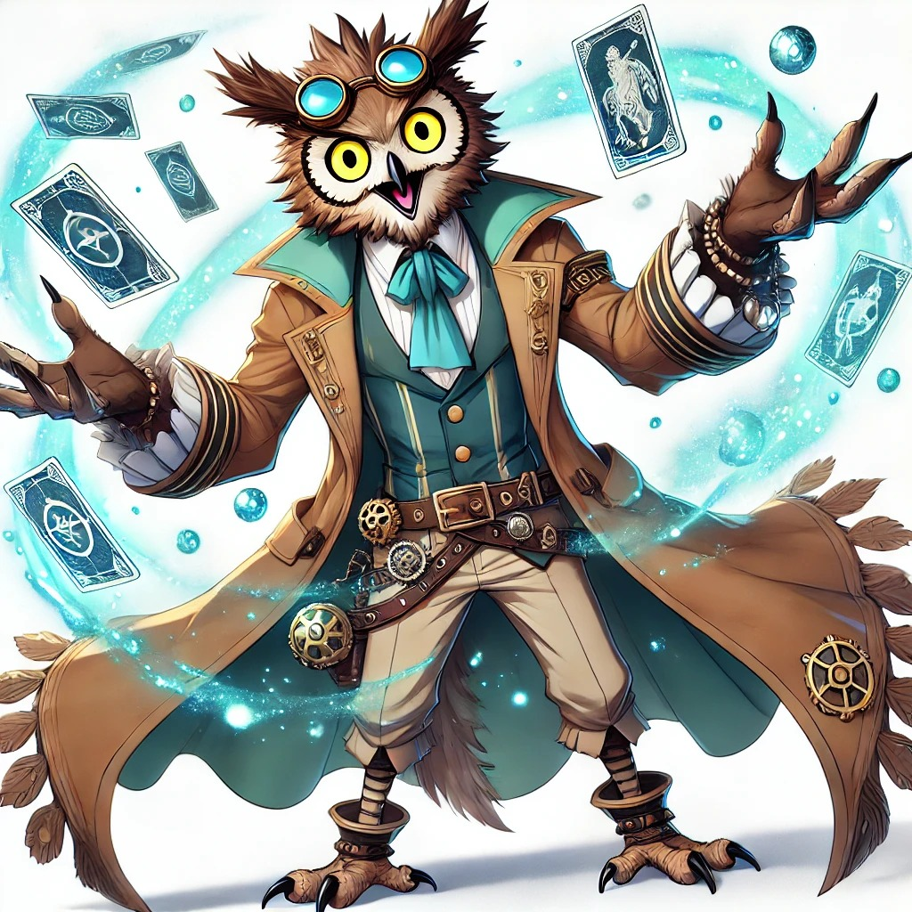
Akuma
Dono
Godslayer dell’acido
Rango
Note
Akuma non è mai stato qualcuno in grado di seguire le regole o gli ordini, nato nella povertà e discriminato per via della sua natura demoniaca è sempre trovato al margine della società, schiacciato dai più ricchi ed i più potenti.
Nato dopo la guerra del sangue quando i Tiefling erano attivamente perseguitati, in cerca di qualche tesoro si trovò a visitare le rovine di un antico tempio, trovandosi però imprigionato.
Nella sua prigione trovò un antico rituale, in grado di creare i Godslayer dell’acido.
Così nacque il nuovo Godslayer dell’acido, un affronto alla natura ed agli Dei ed Akuma non potrebbe essere più soddisfatto di ciò.
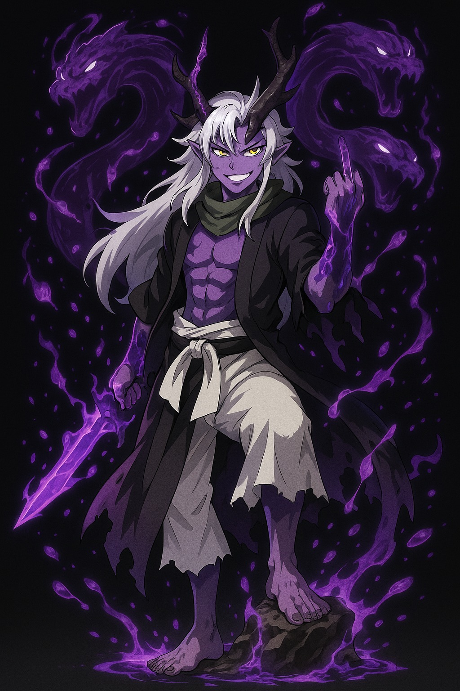
Goetia
Dono
Godslayer del fuoco
Rango
Note
Nato durante la guerra del sangue ed addestrato come uno dei tanti guerrieri, riuscì ad ottenere l’approvazione del Dio del Fuoco, il quale gli concesse il suo potere, trasformandolo in un Godslayer. Dei migliaia di Godslayer impiegati durante la guerra, ben pochi sopravvissero per vedere il periodo di pace che ne susseguì, fortunatamente però lui fu uno di questi. Dopo aver messo su famiglia ed aversela vista portare via a causa di un’incursione di una gilda oscura, Goetia perse ogni voglia di combattere, lasciandosi andare e dedicando tutto sé stesso alle sue adorate nipoti, Furia e Angel. Benchè con il passare del tempo anche il rapporto con Angel è andato a deteriorarsi, rimanendo saldo solo con Furia, Goetia non ha mai smesso di tenere alle sue nipoti. Seguendo Furia anche lui si è unito ai Lions pride senza però ambire a posizioni prestigiosi, preferendo poltrire assieme al suo nuovo, vecchio amico Arret.

Cupido
Dono
Godslayer dell’amore
Rango
Note
All’alba dei tempi Cupido nacque come Dio minore, creato dal Karma ed in possesso del Dominio dell’amore. Benchè non fosse mai stato particolarmente legato ai doveri da Dio impostigli, preferendo dedicarsi ad attività più frugali e mondane con i mortali, anche lui decise di intervenire nella Guerra del Sangue, addestrando i suoi seguaci e donando i suoi poteri creando Godslayer dell’amore.
Nonostante provasse una grande fiducia nei suoi seguaci, venne tradito proprio dal suo più promettente Godslayer, Eros, il quale gli sottrasse il Dominio privandolo così dei suoi poteri divini.
Benchè non fosse il primo Dio a venir sopraffatto da un mortale, ciò spinse le divinità conclusa la guerra a sospendere l’addestramento di nuovi Godslayer ed eliminare quelli che si mostravano troppo ambiziosi.
Cupido, intanto privato dei suoi poteri, cadde in uno stato di profonda depressione e mentre il suo corpo immortale iniziava a mostrare i segni della sua vita dissoluta, con il passare degli anni, trovò una nuova casa nei Lions pride.
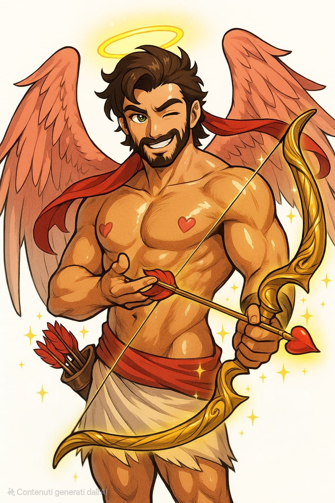
Zekri Eilphasi Moonlight Berdia Windkind
Dono
Dono del disegno
Rango
Note
Questo giovane Rakin dall’animo gioviale e loquace ha guadagnato una posizione di rispetto all’interno dei Lions pride, e benchè ad una prima occhiata possa essere facilmente sottovalutato la realtà lo mostra essere un mago capace persino di ammaestrare un Wolfkind.
Come tutti i Rakin anche Zekri ha una famiglia molto numerosa, ed è in grado di farsi nuove amicizie grazie al suo carattere gentile ed amichevole, benchè spesso ingenuo.
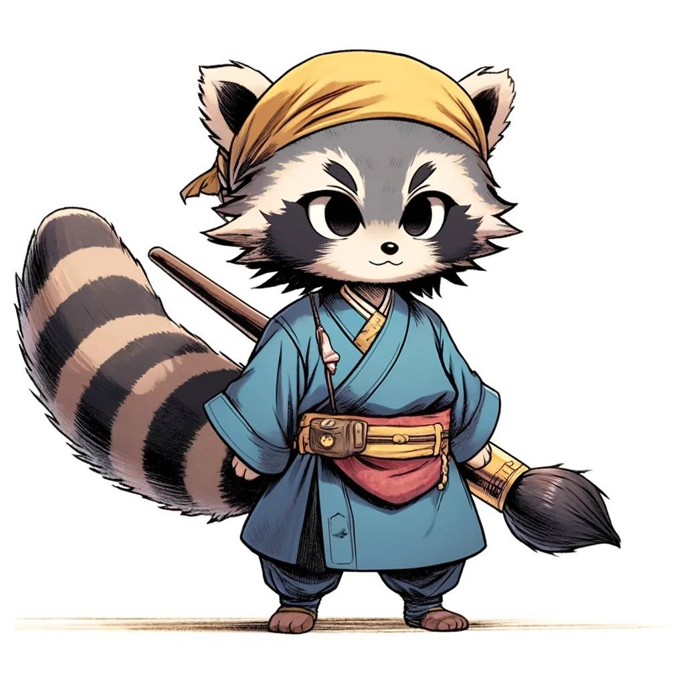
Perseide
Dono
Dragon slayer della luna
Rango
Note
Questa misteriosa Dragon slayer originaria dell’Isola dei sussurri lunari, ha sempre interagito poco con i suoi compagni di Gilda, per via del suo scarso adattamento alla luce solare predilige svolgere gli incarichi nel cuore della notte.
Si sa poco del suo passato (principalmente perché il suo bg è ancora incompleto).
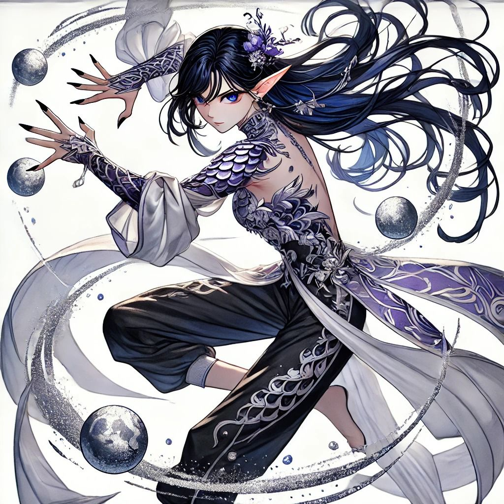
Artemide
Dono
Dono del vento
Rango
Note
La fedele compagna di Perseide, anche lei come tutti gli Exeedo è legata profondamente con la sua compagna con la quale sono cresciuti e si sono allenati assieme.
Purtroppo per Artemide l’incompatibilità di orari per il sonno la spinge spesso a stare sveglia la notte.
Per questo motivo Artemide è spesso possibile trovarla addormentata nel cappuccio di Perseide, nel costante tentativo di recuperare il sonno perso a causa della sua compagna.
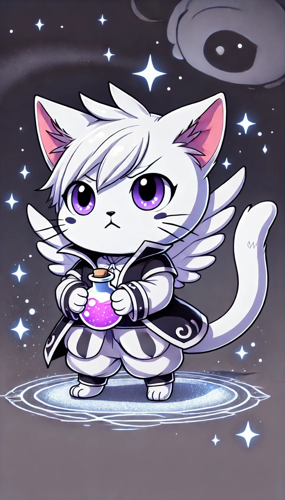
Mata
Dono
Dono dei legami
Rango
Note
Questa splendida Asimar poco improntata per i combattimenti, ha spesso svolto il ruolo di ragazza immagine per i Lions pride, con una cospicua pletora di fan.
Specializzata nel combattimento con l’arco, implementato con la sua magia si rivela essere una maga eclettica in grado di brillare quando in compagnia di alleati da supportare.
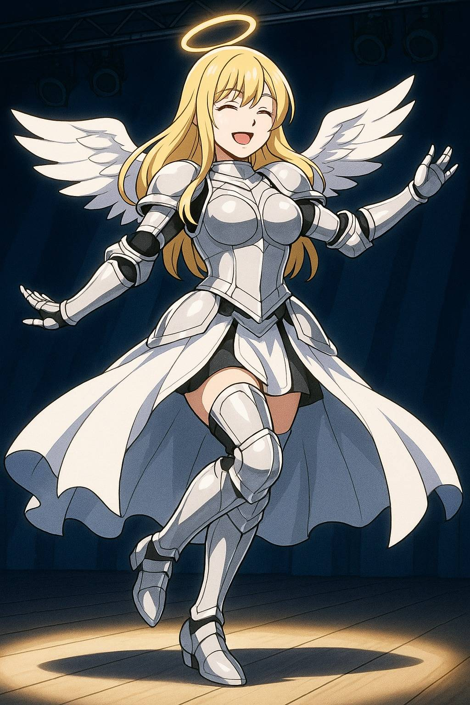
Caleen Verdefoglia
Dono
Dragon slayer delle piante
Rango
Deceduto
Note
Dal carattere rilassato Caleen è un Elfo dei boschi che ha sempre preso la vita alla leggera, finchè però il suo villaggio non è stato attaccato e distrutto dal Circo nero in cerca delle ricerche del padre, il quale stava sviluppando un rituale per creare dei nuovi tipi di Dragon slayer.
Purtroppo con l’attacco e la distruzione del villaggio non rimase nulla del rituale ma Caleen iniziò a mostrare nuovi poteri draconici.
Presto fece conoscenza di Paka, il suo nuovo compagno ed amico Exeedo.
Con i suoi poteri in crescita, seguì le orme dei suoi cugini Loryel e Daylor e si diresse a Magnolia per entrare nei Lions Pride, per scoprire di più sui responsabili della distruzione del suo villaggio e la morte della sua famiglia (è una trama interessante con grandi possibilità di sviluppo, sarebbe un vero peccato se questo pg morisse sul nascere).
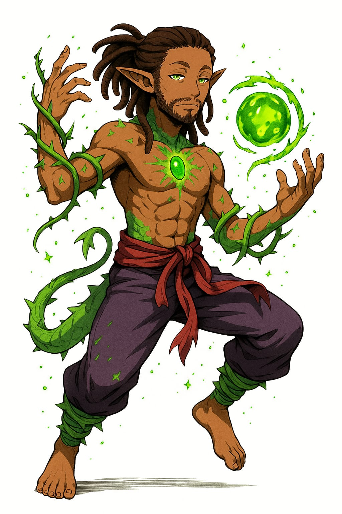
Paka
Dono
Magia delle illusioni
Rango
Deceduto
Note
Gli Excedo che sono legati ai Dragon slayer sentono il loro legame da quando sono nati, alcuni non si schiudono finchè non percepiscono quel legame, ma per Paka non fu così.
Paka nacque nella città degli Excedo svincolato da qualunque legame e per molto visse così, finchè, un giorno di colpo non iniziò a sentirlo, un forte legame proveniente dal villaggio degli elfi silvani poco distante.
Un nuovo Dragon slayer era nato ed un nuovo legame si era instaurato, un legame diverso da quello predestinato come per i Dragon slayer di prima generazione, ma comunque profondo ed intenso.
Paka decise di seguire quel richiamo e di stringere un’amicizia con Caleen, era un Dragon slayer inesperto, non aveva seguito l’addestramento di un drago, ciononostante era una persona gentile ed amichevole e presto il loro legame divenne indissolubile.
Grazie al suo sapere Paka guidava Caleen nelle avversità e nella sua ricerca e con la sua magia lo teneva al sicuro, assieme nulla avrebbe potuto metterli in difficoltà (sicuramente non un Rakshasa).
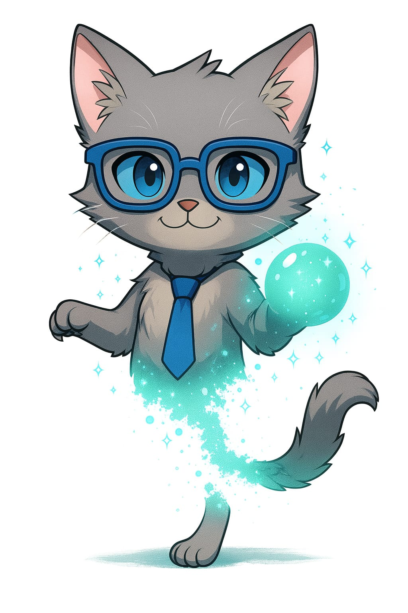
Ferus
Dono
Magia della musica
Rango
Note
Quando era molto piccolo Ferus perse i suoi genitori mentre proteggevano il villaggio da un gruppo di mostri che lo avevano attaccato.
Senza la sua famiglia, solo al mondo perse ogni volontà di vivere e per anni si trovò a vagare solo sopravvivendo appena.
Un giorno però trovò una nuova scintilla che riaccese in lui la voglia di vivere, da una locanda una splendida musica fece risvegliare le sue emozioni ormai intorpidite.
Da allora Ferus dedicò tutto sé stesso alla musica, con lo scopo di rallegrare gli animi di coloro che come lui ormai avevano perso ogni gioia.
Nei suoi viaggi giunse a Magnolia dove entrò nei Lions pride, grazie alla sua musica ed alla sua magia avrebbe combattuto i malvagi che portavano tristezza nel cuore delle persone.
Le emozioni imbrigliate nella sua musica attirarono l’attenzione di una creatura Extraplanare, una Musa di nome Eine Kleine, la quale decise di accompagnare il giovane mortale, istruirlo nelle sue carenze e proteggerlo dai pericoli.
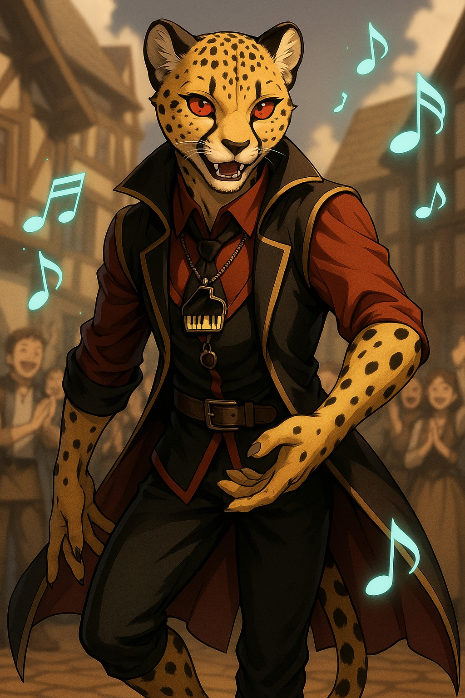
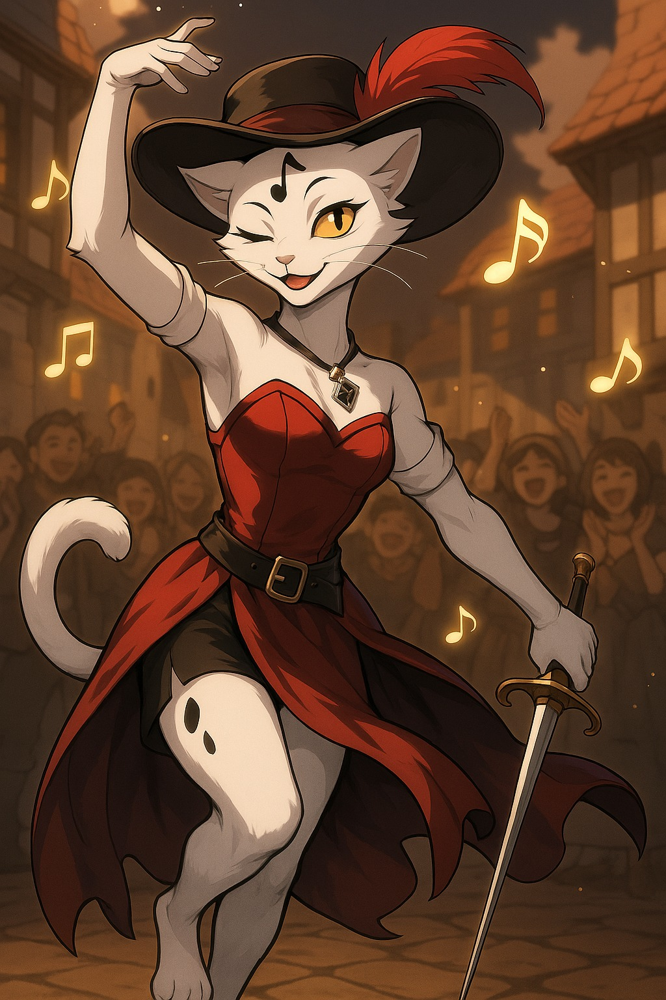
Kerr
Dono
Magia degli Sciami
Rango
Deceduto
Note
Kerr è sempre stato un miracolato, nato in una delle innumerevoli tribù di Gnoll che abitano le impervie distese sabbiose di Terraspra, abituato a vivere di stenti e saccheggi nella sua tribù, dove ogni cosa va guadagnata con la forza, dove non c’è spazio per le parole e per gli inganni, se sei più forte ottieni quel che desideri, semplice.
In un anno di particolare carestia, molte tribù di zooriadi si unirono in un'unica forza d’invasione con l’intento di forzare i confini di Fiore a sud per saccheggiare i villaggi e le città all’interno, il giorno dell’attacco Kerr fu miracolato.
Mentre tutta la sua gente venne massacrata e messa in fuga, grazie ad un evento fortuito cadde nel mare dello Zenith e si trovò ad approdare sulle coste di Fiore, solo in un paese a lui sconosciuto.
Con il passare del tempo riuscì ad adattarsi ed integrarsi in una cultura più civilizzata di Saguaro, presto scoprì che il modo migliore per sopravvivere anche li era quello di seguire il più forte, per questo motivo decise di unirsi ai Lions pride, un piccolo distaccamento della gilda si trovava anche lì, e grazie alla sua magia ed alla sua adattabilità si mostrò essere un elemento capace e prezioso.
Sarà un elemento valido per i Lions pride in futuro, l’importante è che non ci siano Rakshasa nei dintorni…
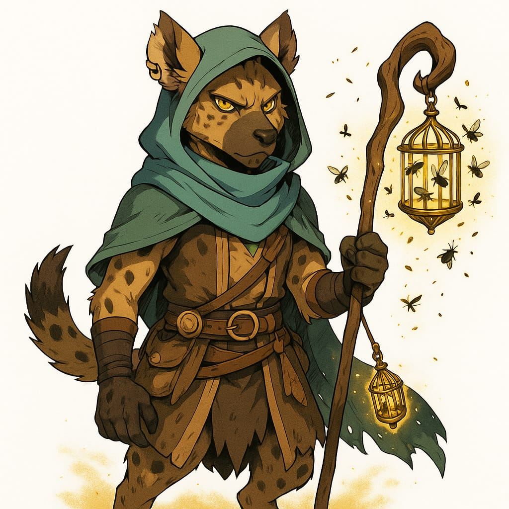
Melanie
Dono
Magia dello spazio
Rango
Deceduto
Note
Una maga dal roseo futuro, dotata di una magia rara e molto potente, con delle premesse del genere una maga come Melanie non poteva ambire a nulla di meno che ad una posizione fra i Lions pride.
La prima missione importante assegnatale è stata a Saguaro, dall’altra parte di Fiore, finalmente potrà mostrare le sue incredibili capacità, sarà certamente un successo se non si incontrano Rakshasa.
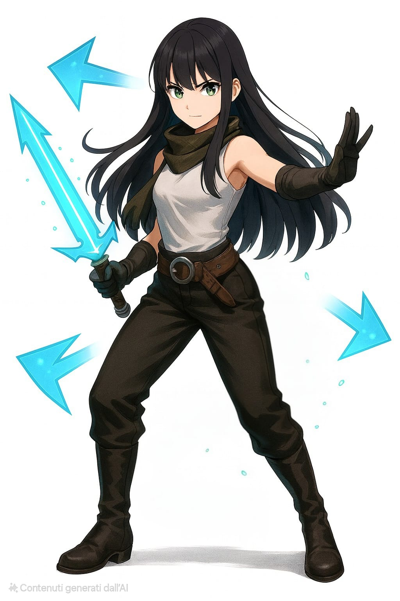
Lainko Epifiteius
Dono
Magia dell’elettricità
Rango
Deceduto
Note
Lainko nasce come tutti i Rakin in una famiglia molto numerosa, con fratelli e parenti sparpagliati in tutto il continente, benchè non fosse il più forte o il più intelligente della sua famiglia, era ed è sempre stato il più veloce, nessuno riusciva a superarlo.
La sua imbattibile velocità lo rese molto competitivo, girava dove poteva in cerca di sfidanti, ma nessuno riusciva a stargli dietro, tinse di giallo persino la sua pelliccia, in onore al suo dono dell’elettricità.
Nel suo girovagare però, trovò pane per i suoi denti, un piccolo Exeedo tigrato, anch’esso con il dono dell’elettricità, lo surclassò da ogni punto di vista.
Si chiamava Zapper ed era dei Lions pride, da quel momento Lainko ebbe un solo obbiettivo, superarlo e sconfiggerlo, se non in una gara di potere in una di velocità.
Si unì ai Lions pride anche lui e divenne un apprendista di Zapper con il solo scopo di superarlo, chissà se ci riuscirà o troverà prima la sua fine a causa di un Rakshasa.
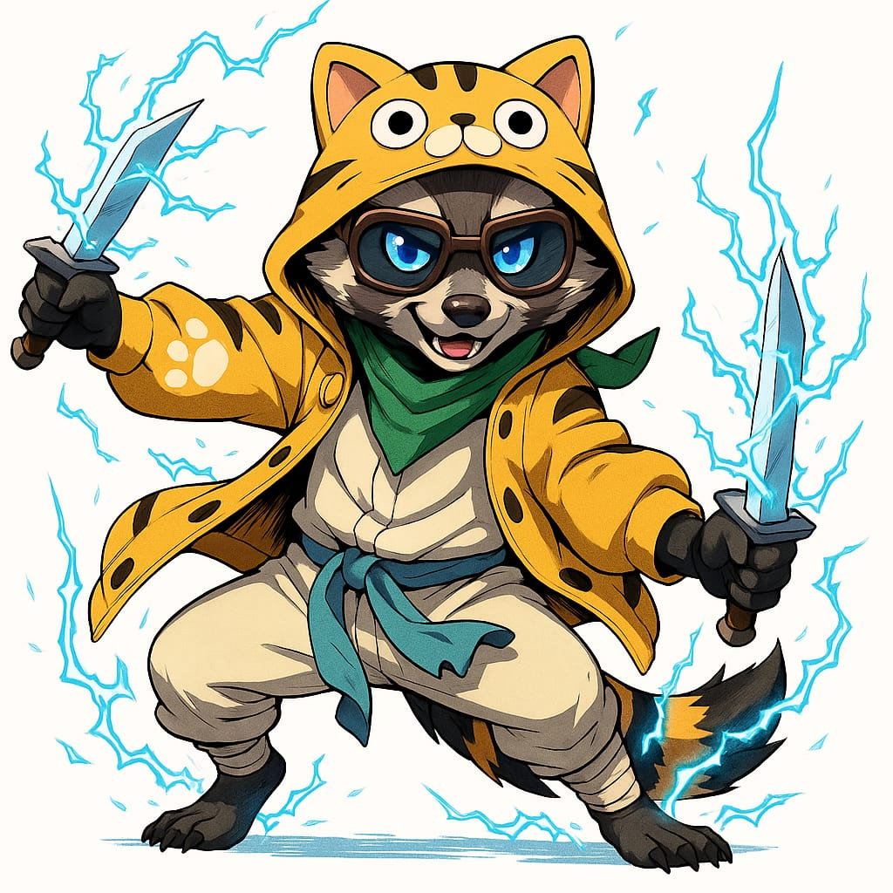
Vulteim
Dono
Magia della gravità
Rango
Deceduto
Note
Un monaco cieco dalla nascita che ha imparato a muoversi e percepire l’ambiente circostante grazie alla sua magia, divenendo un mago incredibilmente capace.
Nonostante la sua disabilità Vulteim puntò sempre sui suoi punti di forza non lasciandosi mai scoraggiare dalle sue mancanze, ispirando moltissimi giovani maghi a dare il loro meglio e spronando le nuove generazioni.
Vulteim era considerato dai più invincibile, ma purtroppo oltre alla cecità aveva una letale allergia verso i proiettili sparatigli in testa, che lo portarono ad una rapida dipartita.
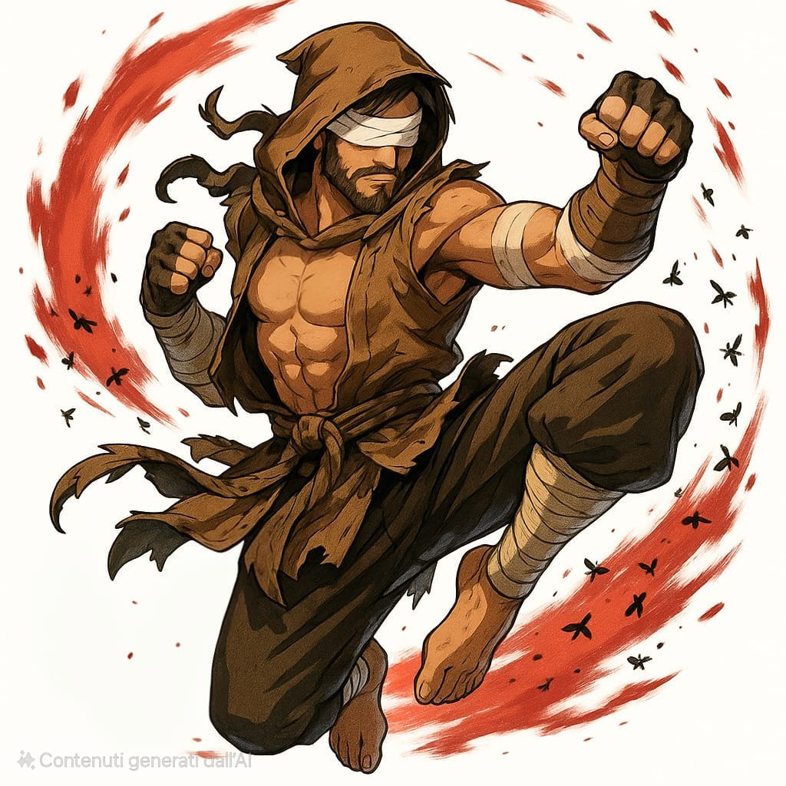
Cynthia
Dono
Magia dell’immaginazione
Rango
Note
Cynthia viveva con la sua famiglia in una tribù nomade di Shika, quando questa venne massacrata da un gruppo di banditi, si trovò sola ed abbandonata.
Venne adottata da un gruppo circense itinerante e ben presto divenne la star dello spettacolo ovunque andassero grazie alla sua incredibile musica.
Nel circo fece la conoscenza di Cyrus, un mezz’oni che si innamorò perdutamente di lei e divenne la sua ombra.
Quando il Circo si sciolse e rimasero solo Cynthia e Cyrus, ebbero spesso problemi a causa della cattiva nomea che la razza del Mezz’oni si porta dietro.
In cerca di una nuova casa ed una protezione dalli pregiudizi, si unirono ai Lions pride.
Ora Cynthia alterna la sua vita da maga in difesa dei più deboli ad una vita da Pop star con lo pseudonimo di Gwyn.

Cyrus
Dono
Dono Fortuna/Sfortuna
Rango
Note
Come molti mezz’oni anche Cyrus ebbe un’infanzia tragica, la madre morì appena nato e ben presto scoprì che nel mondo non c’era posto per lui.
Tutti vedevano in lui un mostro, una minaccia da evitare o da debellare, imparò rapidamente ad indurire il proprio cuore, a combattere per farsi spazio e sopravvivere.
Viaggiò con molti gruppi di persone, ma mai nessuno degno della sua fiducia, degno di chiamare casa.
Mentre viaggiava con un gruppo circense però, incontrò qualcuno la cui vita è stata altrettanto dura, qualcuno che non si era lasciato abbattere dalle avversità, la cui musica era in grado di portare un po' di luce in questo mondo così oscuro.
Cyrus si innamorò perdutamente di quella Shika, così bella e fragile, decidendo così che avrebbe protetto quella splendida creatura ad ogni costo.

Nargi del Clan “Neve mobile”
Dono
Dono della forza
Rango
Note
Nargi viene da un piccolo villaggio di Yagi nei picchi a nord, gente semplice dedita al duro lavoro ed al combattimento.
Benchè Nargi non disdegnasse combattere, era un po' diverso dal resto della sua famiglia, in uno dei viaggi lontano dal suo villaggio per fare compere, incontrò un bardo in grado di affascinarlo con la sua musica, risvegliando in lui emozioni che non aveva mai provato.
Tornato a casa decise che anche lui avrebbe dedicato il suo impegno ad apprendere la capacità di trasmettere quelle emozioni che aveva provato per mezzo della musica.
Non potendo approfondire quelle conoscenze nel suo villaggio, decise di partire, trovando così casa nei Lions pride.
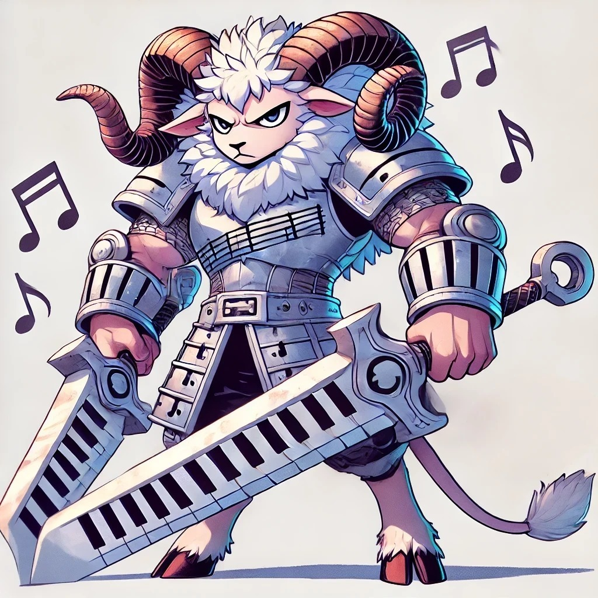
Nix Moondawn
Dono
Magia della non morte
Rango
Note
Nata ad Achillea Nix fu sempre molto legata alla morte, grazie alla sua famiglia, in possesso di una fiorente attività di servizi funebri, Nix potè approfondire senza destare sospetti la sua magia della non morte.
Crescendo però decise di lasciare le attività funerarie della famiglia, impiegando la sua magia per il bene, perciò decise di partire per Magnolia ed unirsi ai Lions pride.
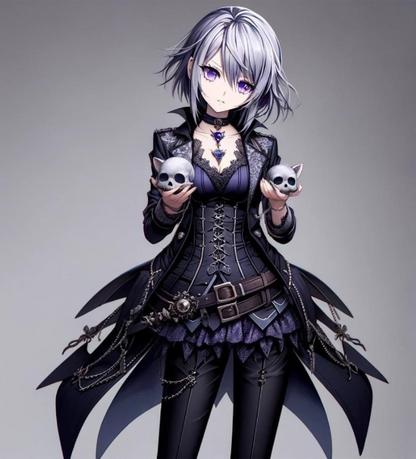